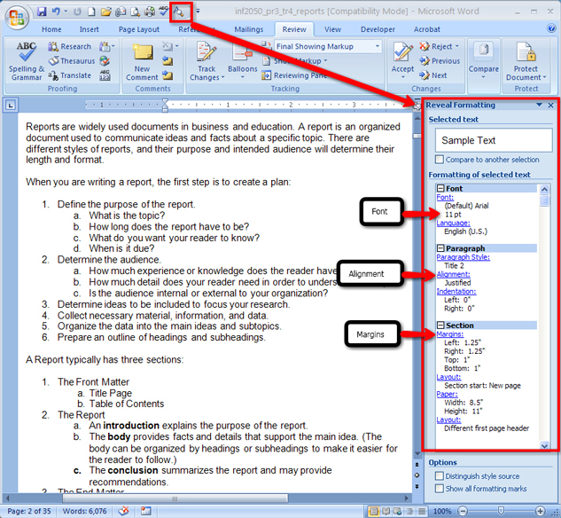

As you have seen, different report styles use different formatting guidelines. For example, MLA- and APA-style reports are formatted with one-inch margins and double spacing. The Reveal Formatting feature of Microsoft Word 2007 will show you the formatting codes used in a document. Use this feature to check that the formatting for your report is done correctly according the specific style guide used.
To use Reveal Formatting, you must add it to your Quick Access Toolbar, use the Customize Quick Access Toolbar button, and select All Commands to find the Reveal Formatting command as shown in the diagram below.
Go to the Instructional Videos and watch “Reveal Formatting” to see how to add Reveal Formatting to your Quick Access Toolbar.
When you have added Reveal Formatting to your Quick Access Toolbar, click the command button to see the Reveal Formatting task pane. Notice the formatting of the font, paragraph, and page set up used to create this document.

Microsoft product screen shot(s) reprinted with permission from Microsoft Corporation.